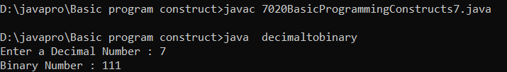

import java.util.Scanner;
class decimaltobinary
{
public static void main(String[] args) {
int rem,num;
String binaryNumber = "";
Scanner input = new Scanner(System.in);
System.out.print("Enter a Decimal Number : ");
num = input.nextInt();
while(num > 0){
rem = num % 2;
binaryNumber = rem + "" + binaryNumber;
num =num / 2;
}
System.out.println("Binary Number : "+binaryNumber);
}
}
